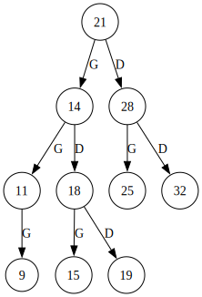

Arbres enracinés
Pré-requis
Si les listes sont maîtrisées, ceci ne devrait presque être qu'une formalité.
Arbre enraciné quelconque
Voici un arbre enraciné quelconque:
graph TD;
A((3))
A --> B((7))
A --> C((2))
B --> D((9))
B --> E((18))
C --> F((15))
C --> G((6))
C --> H((5))
F --> I((8))Arbre (enraciné)
Un arbre est soit vide, soit composé d'un noeud portant une donnée ainsi qu'une forêt.
Une forêt est vide ou c'est un ensemble d'arbres disjoints.
On appelle racine un noeud qui n'a pas de parent.
On appelle feuille un noeud n'ayant pas d'enfant.
La taille d'un arbre est son nombre de noeuds.
La hauteur d'un arbre possède 2 définitions impactant la définition de la hauteur de l'arbre vide:
- Longueur du chemin à la feuille la plus éloignée (\(hauteur(\empty)=-1\))
- Nombre de noeuds dans le chemin à la feuille la plus éloignée. (\(hauteur(\empty)=0\))
Dans un premier temps, nous allons nous intéresser à une forme spéciale d'arbre, les arbres binaires.
Arbres binaires
Arbre binaire
Un arbre binaire est une structure composée d'une clé (ou étiquette), ainsi que de 2 arbres, le sous-arbre gauche (sag) ainsi que le sous-arbre droit (sad). C'est un arbre très particulier car on distingue bien la position de chaque sous-arbre.

Exercice
Proposez une implémentation python immuable du type arbrebin.
Exercices
Implémenter les fonctions d'accès de base:
cle(a: arbrebin) -> intsag(a: arbrebin) -> arbrebinsad(a: arbrebin) -> arbrebinest_vide(a: arbrebin) -> boolest_feuille(a: arbrebin) -> bool
Implémenter en conséquence les fonctions récursives:
hauteurcalcule la hauteur d'un arbre- (je suis un arbre, je pose la question à mon sag et mon sad, qu'est-ce que je fais avec leurs réponse?)
taillecalcule le nombre de noeuds d'un arbresommecalcule la somme des clés d'un arbreto_strrenvoie une str comportant toutes les clés d'un arbre.minimumrenvoie la clé minimum d'un arbre binaire.maximumrenvoie la clé maximum d'un arbre binaire.sont_egauxrenvoie si 2 arbres sont identiques.
Arbre aléatoire
- Créer une fonction récursive
genere_alea(h: int) -> arbrebinqui génère un arbre complet ayant pour hauteur h, comportant des clés aléatoires de 1 à 100. - Spé maths: Créer une fonction récursive
genere_alea2() -> arbrebinqui génère un arbre comportant des clés aléatoires de 1 à 100. La probabilité de créer un noeud doit être l'inverse de sa hauteur. - Spé Maths: Etudiez les fonctions \(f_\alpha(x)=e^{-\alpha x^2}, x\in \mathbb{R^+}, \alpha \in \mathbb{R}^{*+}\)
- Variations, limites, convexité
- Trouvez les coordonnées de leur point d'inflexion.
- Proposez comment utiliser cette fonction pour générer la probabilité de créer un noeud de hauteur \(x\), pour que l'arbre ait à peu près la hauteur \(h\). (on estimera que la probabilité renvoyée au delà du point d'inflexion est rapidement trop faible pour aller bien loin, et qu'il est déjà probable que certaines branches se soient déjà arrêtées avant d'atteindre la hauteur \(h\))
Arbre équilibré
Un arbre est équilibré s'il est vide ou que, à la fois:
- La distance entre la hauteur de ses enfants est au maximum 1.
- Ses enfants sont équilibrés.
Dessinez un arbre équilibré.
Ecrire la fonction est_equilibre(a: arbrebin) -> bool.
Implémentation mutable
L'implémentation ci-dessous utilise aussi une sentinelle, mais ne l'utilise pas de manière aussi sioux que pour les listes. Rien dde circulaire. Elle signifie seulement l'arbre vide. La création d'une sentinelle nous permet de ne pas utiliser la valeur générique None, qui pourrait signifier bien autre chose qu'une absence d'enfant, car None n'est pas propre à notre structure.
class ArbreBin:
def __init__(self, cle, gauche: 'ArbreBin', droit: 'ArbreBin'):
self.cle = cle
self.gauche = gauche
self.droit = droit
def est_feuille(self):
return self.gauche is ARBRE_VIDE and self.droite is ARBRE_VIDE
def est_vide(self):
return self.gauche is ARBRE_VIDE and self.droite is ARBRE_VIDE
def taille(self) -> int:
if self.est_vide():
return -1
return 1 + self.gauche.taille() + self.droit.taille()
class Sentinelle(ArbreBin):
def __init__(self):
super().__init__(0, self, self)
ARBRE_VIDE = Sentinelle()
Un autre possibilté est celle-ci, cette fois-ci avec l'utilisation de None:
class Noeud:
def __init__(self, cle, gauche: 'Noeud|None', droit: 'Noeud|None'):
self.cle = cle
self.gauche = gauche
self.droit = droit
def est_feuille(self):
return self.gauche is None and self.droite is None
## Ici, on ne peut pas avoir de méthode est_vide() car self ne peut jamais être None.
## Si self existe, c'est qu'un objet a été instancié, donc qu'il n'est nécessairement pas rien.
def taille(self) -> int:
"""
self ne pouvant pas être None, le cas de base est qu'il est une feuille.
Ca nous oblige à tester que self.gauche et self.droite ne sont pas None, car None n'a pas de méthode taille()
Comparez ceci avec l'implémentation ci-dessus.
"""
if self.is_feuille():
return 0
tg, td = 0, 0
if self.gauche:
td = self.gauche.taille()
if self.droite:
tg = self.droite.taille()
return 1 + tg + td
Exercice
Implémentez les mêmes fonctions pour les versions mutables proposées.
Les méthodes de parcours en profondeur d'un arbre
préfixe
infixe
postfixe
Parcours en largeur d'un arbre.
Parcourir un arbre en largeur revient à le parcourir étage par étage, de gauche à droite.
Nous allons, pour ce faire, nous appuyer sur la structure de file.
- On initialise une file avec la racine.
- Tant que la file n'est pas vide:
- On défile un noeud
- On l'affiche (ou autre action)
- On enfile ses enfants.
Implémentation
- Ecrire une fonction de parcours en largeur qui affiche un arbre.
- Modifier sensiblement la fonction pour qu'elle retourne une liste de ses éléments.
- Remplacez le mécanisme de file par un mécanisme de pile. Que se passe-t-il?
Arbre binaire de recherche
Arbre binaire de recherche (ABR)
Un arbre binaire de recherche (ABR) est un arbre binaire vide ou possèdant ces propriétés:
- le max des clés de son sag est inférieur à sa clé
- le min des clés de son sad est supérieur à sa clé
- son sag et son sad sont des abr
Définition équivalente: Pour chaque noeud d'un ABR:
- Toutes les clés de son sag sont inférieures ou égales à sa clé
- Toutes les clés de son sad sont supérieures ou égales à sa clé
L'objectif est ici de disposer d'une structure qui nous permette de rechercher de l'information très rapidement.
On considère dans le cours que les clés sont uniques, ce qui est habituellement le cas, mais on pourrait aussi prendre en compte des clés dupliquées, auquel cas, on travaillerait sur des inégalités au sens large.
graph TD;
A[8] --> B[4]
A --> C[12]
B --> D[2]
B --> E[6]
C --> F[10]
C --> G[14]
D --> H[1]
D --> I[3]
E --> J[5]
E --> K[7]
F --> L[9]
F --> M[11]
G --> N[13]
G --> O[15]Exercices
-
Dessiner 3 ABR où, partant d'un arbre vide, on insère successivement les valeurs:
- 3, 7, 1, 9, 4, 8, 2, 5, 6
- 6, 2, 9, 1, 5, 3, 8, 4, 7
- 9, 5, 3, 7, 2, 6, 1, 8, 4
-
Ecrire une fonction
est_abr(a: arbrebin) -> bool - Ecrire une fonction
insere_abr(e: int, a: arbrebin) -> arbrebin - Ecrire une fonction
recherche_abr(e: int, a: arbrebin) -> bool -
Discussion: Quelle est la complexité de
recherche_abr?- Pour un arbre filiforme
- Pour un arbre parfait
-
Implémentez ces fonctions pour la version mutable (important)
Arbre symétrique
graph TD
A1["10"] --- B1["5"]
A1 --- C1["15"]
B1 --- D1["3"]
B1 --- E1["7"]
C1 --- F1["12"]
C1 --- G1["18"]
%% Arbre miroir
A2["10"] --- B2["15"]
A2 --- C2["5"]
B2 --- D2["18"]
B2 --- E2["12"]
C2 --- F2["7"]
C2 --- G2["3"]Les deux arbres ci-dessus sont des miroirs l'un de l'autre.
Ecrire une fonction sont_miroirs[T](a1: arbrebin[T], a2: arbrebin[T]) -> bool.
L'arbre ci-dessous est symétrique.
graph TD
A["10"] --- B["5"]
A --- C["5"]
B --- D["3"]
B --- E["7"]
C --- F["7"]
C --- G["3"]
D --- H["1"]
D --- I["2"]
G --- J["2"]
G --- K["1"]
E --- L["4"]
E --- M["6"]
F --- N["6"]
F --- O["4"]Ecrire une fonction est_symetrique[T](a: arbrebin[T]) -> bool.
Application à la compression de données - Codage de Huffman
Liens à consulter:
- https://www.youtube.com/watch?v=iiGZ947Tcck
- https://cmps-people.ok.ubc.ca/ylucet/DS/Huffman.html
- https://www.csfieldguide.org.nz/en/interactives/huffman-tree/
Créez un package "projets" à la racine de votre repo. N'oubliez pas de mettre __init__.py dans le dossier.
from structures.hierarchiques import arbrebin_mutable as ab
from structures.hierarchiques import dessin
def get_dicofreq(texte: str) -> dict[str, int]:
"""Renvoie un dictionnaire de fréquence des lettres du texte en entrée"""
pass
def get_arbre_huffman(dicofreq: dict[str, int]) -> ab.ArbreBin:
"""Renvoie un arbre de Huffman d'après le dictionnaire de fréquences des lettres"""
# Etape 1: Construire EN COMPREHENSION une liste de feuilles d'après le dictionnaire de fréquences
# Etape 2: Construire l'arbre de Huffman en agrégeant progresivement les arbres de la liste
pass
def get_codes(arbre: ab.ArbreBin) -> dict[str, str]:
"""
Fonction récursive.
Renvoie un dictionnaire contenant la codification binaire de chaque caractère
"""
pass
def compresser(texte, codes: dict[str, str]) -> str:
"""Compresse un texte en utilisant le dictionnaire d'encodage"""
pass
def decompresser(texte, codes: dict[str, str]) -> str:
"""Décompresse un texte en utilisant le dictionnaire d'encodage"""
pass
Encadrement de la hauteur d'un arbre binaire
\(hauteur(\empty)=-1\)
Comment encadrer
Avec \(n\) noeuds, l'arbre le plus haut qu'on puisse construire est filiforme, et l'arbre le moins haut est un arbre où tous les niveaux sont remplis sauf evéntuellement le dernier.
Hauteur d'un arbre filiforme
Un arbre filiforme de taille \(n\) est de hauteur \(n-1\)
Hauteur d'un arbre parfait à \(n\) noeuds*
graph TD
subgraph Niveau0 ["2^0 nœud"]
A["1"]
end
subgraph Niveau1 ["2^1 nœuds"]
A --- B["2"]
A --- C["3"]
end
subgraph Niveau2 ["2^2 nœuds"]
B --- D["4"]
B --- E["5"]
C --- F["6"]
C --- G["7"]
end
subgraph Niveau3 ["2^3 nœuds"]
D --- H["8"]
D --- I["9"]
E --- J["10"]
E --- K["11"]
F --- L["12"]
F --- M["13"]
G --- N["14"]
G --- O["15"]
endUn arbre parfait de hauteur \(h\) a \(\displaystyle \sum_{k=0}^h 2^k\) noeuds.
On reconnaît la somme des termes d'une suite géométrique de raison 2.
Un arbre parfait de hauteur \(h\) a donc \(N=2^{h+1}-1\) nœuds.
\(N = 2^{h+1} - 1\)
\(2^{h+1} = N + 1\)
En passant au logarithme de base 2 de chaque côté, la hauteur d'un arbre parfait ayant \(n\) noeuds est donnée par la formule \(h = \log_2(n+1)-1\).
Encadrement
En tenant compte du fait que l'arbre n'est pas nécessairement rempli au dernier niveau, sa hauteur minimum est celle de l'arbre parfait associé:
\(\lceil \log_2(n+1) - 1 \rceil\), donc \(\lceil \log_2(n+1) \rceil - 1\)
On en déduit l'encadrement de la hauteur \(h\) de tout arbre binaire de taille \(n\):
\(\lceil \log_2(n+1) \rceil - 1 \leq h \leq n - 1.\)
Soit \( n \ge 1 \). Nous allons démontrer que : \(\lfloor \log_2(n) \rfloor = \lceil \log_2(n+1) \rceil - 1\)
Posons \(k = \lfloor \log_2(n) \rfloor\)
Par définition de la fonction partie entière inférieure, cela signifie que :
\(k \le \log_2(n) < k+1\)
(Le but ici, c'est de faire apparaître du \(n+1\) au milieu, de passer l'inégalité de gauche en strict et celle de droite en large. Et comme ce qu'on veut démontrer est censé être vrai, ça devrait bien se goupiller)
En appliquant la fonction \(x \mapsto 2^x\), on obtient : \(2^k \le n < 2^{k+1}\)
En ajoutant 1 à chaque terme, nous avons : \(2^k + 1 \le \textcolor{red}{n + 1 \le} 2^{k+1}\)
En prenant le logarithme en base 2 de ces inégalités, on trouve :
\(\log_2(2^k + 1) \le \log_2(n+1) \le \log_2(2^{k+1}) = k+1\)
Comme \(\log_2(2^k + 1) > \log_2(2^k) = k\), on obtient \(k \textcolor{red}{<} \log_2(n+1) \le k+1\)
i.e., par définition de la fonction partie entière supérieure, \(\lceil \log_2(n+1) \rceil = k+1\)
En isolant \(k\), nous avons \(k = \lceil \log_2(n+1) \rceil - 1\)
Comme nous avons défini $ k = \lfloor \log_2(n) \rfloor $, nous concluons que :
l'encadrement de la hauteur \(h\) de tout arbre binaire de taille \(n \geq 1\) est donc:
Avancé - Rotations

- Montrer que la rotation préserve les propriétés d'ABR
- Ecrire une fonction
rotation_droite - Ecrire une fonction
rotation_gauche - En considérant les hauteurs des sad et sag avant et après rotation, discuter à quoi pourraient servir les rotations.
Recherche - Python avancé
Sans l'exécuter, étudier ce que fait la fonction suivante:
type vide = tuple[()]
type arbrebin[T] = vide|tuple[T, arbrebin[T], arbrebin[T]]
ARBRE_VIDE = ()
def mystere[T](a: arbrebin[T]) -> list[T]:
def aux(f: list[arbrebin[T]]) -> list[T]:
match f:
case []: # cas où f est la liste vide
return []
case (), *reste: # cas ou le premier element de f est l'arbre vide (), et on affecte le reste de la liste à la variable reste.
return aux(reste)
case (cle, (), ()), *reste: # cas où le premier élément est une feuille
return [cle] + aux(reste)
case (cle, sag, sad), *reste: # cas où le premier élément est un noeud quelconque.
return [cle] + aux(reste + [sag] + [sad])
case _: # spécial python, car python n'étant pas fortement typé, la fonction accepte n'importe quoi en paramètre.
raise ValueError("Ce cas ne peut pas arriver, le type de a doit être arbrebin[T], vous avez mis n'importe quoi dans la fonction")
return aux([a])
MP2I
Implémentez doctement toutes les fonctions en OCaml. (seulement la version immuable. Il est aussi possible d'implémenter la version mutable en OCaml, mais chaque chose en son temps)
On utilisera cette définition d'un arbre binaire:
type 'a arbrebin = Vide | Noeud of 'a * 'a arbrebin * 'a arbrebin
'a est l'équivalent du type générique T qu'on a utilisé en python.
'a arbrebin veut dire arbre binaire portant des données de type 'a